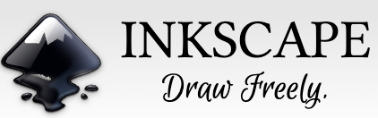

Guía 1004: Anteproyecto de grado¶
|
|

Exploración Estructuración Actividad práctica Transferencia
Temática: Formulación y estructuración técnica de proyectos de investigación aplicada en el ámbito escolar.
Objetivo de aprendizaje: Desarrollar las competencias necesarias para plantear un anteproyecto tecnológico, aplicando las normas APA y estructurando correctamente sus componentes metodológicos, con el fin de resolver problemáticas identificadas en el entorno institucional.
DESEMPEÑO: Identifica y redacta los componentes básicos del anteproyecto de grado, cumpliendo con los estándares de la norma APA y la estructura metodológica requerida para el desarrollo de proyectos en la institución.
Componente: Naturaleza y evolución de la T&I.
Competencia: Construyo conocimientos y saberes de base tecnológica e informática para la toma de decisiones en el desarrollo de productos tecnológicos.
Evidencia de aprendizaje: Ideo a partir de saberes de base tecnológica e informática metodologías de diseño y planeación para la concepción de propuestas contextualizadas en T&I.
Actividades desarrolladas en su totalidad.
Participación en clase.
Explicación clara de conceptos.
Argumentación de ideas.
Cumplimiento de las reglas del aula.
Plan de refuerzo 04.pdf Descargar
Mensaje del autor¶
“El desarrollo de un proyecto de grado representa una oportunidad fundamental para aplicar los conocimientos técnicos y metodológicos adquiridos durante su formación. Esta guía tiene como propósito orientar al estudiante en formular una propuesta estructurada, rigurosa y capaz de generar soluciones tangibles para las necesidades identificadas en nuestra institución. Se les invita a abordar cada etapa con compromiso y responsabilidad, aplicando los estándares académicos aquí expuestos para transformar sus ideas en proyectos de valor”.
—Camilo Fonseca
¿Qué es el proyecto de grado?¶
El proyecto de grado es un trabajo de investigación que el estudiante realiza para aplicar sus aprendizajes y conocimientos adquiridos en la Institución Educativa John F. Kennedy (IEJFK).
“La planeación del proyecto se realiza en grado DÉCIMO y la ejecución del proyecto se realiza en grado ONCE”.
REQUISITO DE GRADO
Cómo requisito de grado, el estudiante debe desarrollar un proyecto que identifique alguna problemática en la institución y darle una solución de tipo tecnológico.
Las problemáticas pueden ser de tipo académico o administrativo.
Las soluciones tecnológicas tienen que ver con alguno de los siguientes temas:
MANTENIMIENTO y ELECTRÓNICA
REDES y CIBERSEGURIDAD
DESARROLLO y PROGRAMACIÓN
OFIMÁTICA y SOFTWARE LIBRE
Fases del proyecto de grado
El proyecto de grado se desarrolla en 8 fases.
FASE 01: Selección del tema del proyecto (GRADO DÉCIMO)
FASE 02: Selección de la idea del proyecto (GRADO DÉCIMO)
FASE 03: Entrega del documento del anteproyecto (GRADO DÉCIMO)
FASE 04: Búsqueda de ASESOR de proyecto (GRADO DÉCIMO)
FASE 05: Asignación de código de proyecto (GRADO DÉCIMO)
FASE 06: Ejecución del proyecto (GRADO ONCE)
FASE 07: Entrega del documento del proyecto y presentación de diapositivas (GRADO ONCE)
FASE 08: Sustentación ante jurados externos (GRADO ONCE)
Entregables del proyecto
El proyecto de grado tiene los siguientes 4 entregables:
Documento del ante-proyecto.
Resultado del proyecto (producto, hardware, software, experiencia, servicio, etc.)
Presentación con diapositivas para la sustentación.
Documento final del proyecto.
¿Cuál es la diferencia entre los documentos del ante-proyecto y el proyecto de grado?
La diferencia es que el documento del ante-proyecto se realiza ANTES de ejecutar el proyecto (GRADO DÉCIMO). Por el contrario el documento del proyecto se realiza DESPUÉS de ejecutar el proyecto (GRADO ONCE).
Elementos del ante-proyecto vs proyecto
ANTE-PROYECTO |
PROYECTO |
|---|---|
Portada |
Portada |
Resumen |
|
Abstract |
|
Índice |
Índice |
Índice de tablas |
Índice de tablas |
Índice de figuras |
Índice de figuras |
Introducción |
|
Planteamiento de problema |
Planteamiento de problema |
Justificación |
Justificación |
Objetivos - Objetivo General - Objetivos específicos |
Objetivos - Objetivo General - Objetivos específicos |
Pregunta problematizadora |
Pregunta problematizadora |
Marco teórico - Marco conceptual - Marco de antecedentes - Marco legal |
Marco teórico - Marco conceptual - Marco de antecedentes - Marco legal |
Aspectos metodológicos - Fases de proyecto - Cronograma de actividades - Técnicas e Instrumentos - Población |
Aspectos metodológicos - Fases de proyecto - Cronograma de actividades - Técnicas e Instrumentos - Población |
Análisis de resultados |
|
Conclusiones |
|
Referencias |
Referencias |
Sustentación del proyecto de grado¶
En el cuarto periodo de grado undécimo; estudiantes, profesores y jurados externos se reúnen en el auditorio de la IEJFK para participar en la actividad de sustentación de proyectos de grado. Para la sustentación de proyectos de grado se invitan a tres jurados externos:
Jurado de área lengua castellana (NORMAS APA, REDACCIÓN, ORATORIA etc.)
Jurado de área idioma extranjero (SPEAKING ENGLISH)
Jurado externo especialista (TECNOLOGÍA, INFORMÁTICA Y SISTEMAS)
Cada grupo de trabajo, tiene 10 minutos para sustentar su proyecto. Posteriormente en 5 minutos, los jurados realizan unas preguntas a los estudiantes y califican los proyectos.
Los proyectos y sus calificaciones, serán publicados en el repositorio de proyectos de grado del portal web de la IEJFK
Porcentajes de calificación
Dominio del tema |
Argumentación |
Coherencia |
Innovación |
Producto funcional |
|---|---|---|---|---|
30% |
20% |
20% |
10% |
20% |
NORMAS APA |
Argumentación |
Expresión oral |
Diapositivas |
Presentación personal |
|---|---|---|---|---|
30% |
20% |
30% |
10% |
10% |
Speaking |
Writing |
Personal presentation |
|---|---|---|
50% |
25% |
25% |
Especialidad |
Lengua Castellana |
Inglés |
|---|---|---|
50% |
30% |
20% |
ADVERTENCIA
Los porcentajes de calificación varían según el año.
Repositorio de proyectos de grado¶
El repositorio de proyectos de grado contiene los documentos de los proyectos que los estudiantes han sustentado desde el año 2024. Esto ayuda a futuros estudiantes a entender como presentar y documentar estos proyectos.
Los proyectos en el repositorio, pueden ser elegidos por los estudiantes para continuar su desarrollo (teniendo presente que no es replicar exactamente el mismo proyecto. Se debe buscar modificarlo, adaptarlo, mejorarlo o completarlo).
El repositorio de proyectos de grado de la IEJFK se encuentra publicado en el portal web: REPOSITORIO
Clasificación de proyectos de grado
Cada proyecto de grado tiene una clasificación hasta de cinco estrellas (⭐️) así:
⭐️⭐️⭐️⭐️⭐️ Excelente: El proyecto es excepcional, innovador y presenta una contribución significativa al campo de estudio.
⭐️⭐️⭐️⭐️ Bueno: El proyecto es sólido, bien desarrollado y presenta pocos aspectos que podrían mejorarse.
⭐️⭐️⭐️ Aceptable: El proyecto cumple con los requisitos mínimos, pero presenta algunas áreas que podrían mejorarse.
⭐️⭐️ Insatisfactorio: El proyecto presenta varias deficiencias, que requieren mejoras sustanciales.
⭐️ Deficiente: El proyecto presenta fallas significativas en varios criterios. Necesita revisiones extensas.
Normas APA¶
Las normas APA (American Psychological Association) es un estándar propuesto por la APA, para publicar textos académicos cuyo origen es de 1929. Al día de hoy (2026) están en la 7ma versión.
Un documento que cumpla las normas APA debe tener las siguientes características de formato:
Márgenes: El tamaño de las márgenes en las Normas APA son de 2,54 cm (1 pulgada) para el margen superior, inferior, derecho e izquierdo.

Márgenes¶
Numeración: Las hojas deben estar enumeradas en la esquina superior derecha. En la portada y contraportada debe iniciar la numeración (1 y 2 respectivamente); cada página debe el número correspondiente.
Tamaño papel: Tamaño carta 21.59 cm x 27.94 cm. El papel utilizado no debe tener ningún tipo de calcomanía, cinta adhesiva, pegamento o grapa (nada de publicidad).
Sangría: 5 espacios en la primera línea de cada párrafo
Tipo de letra: Seleccionar Arial o Times News Roman (todo el documento debe tener un solo tipo de letra).
Tamaño de letra: 12 puntos.
Espaciado: Interlineado 2.0, sin espacio entre párrafos.
Alineado: Izquierda, sin justificar.
Aspecto de la portada
Una portada consta de una hoja con tres párrafos distribuidos así:
1er párrafo: Título del documento (En Negrilla).
2do párrafo: Datos del autor.
3er párrafo: Nota del autor.

PORTADA¶
DISTRIBUCIÓN DE ELEMENTOS DEL DOCUMENTO
La distribución de elementos en el documento debe estar organizada de tal forma que facilite su lectura y entendimiento. Por tanto, los elementos deben estar organizados así:
La portada tiene su propia hoja.
El índice tiene su propia hoja.
El índice de tablas e índice de figuras pueden compartir hojas.
El planteamiento del problema, la justificación, los objetivos generales, objetivos específicos y la pregunta problematizadora pueden compartir hojas.
El marco teórico compuesto por el marco conceptual, marco de antecedentes y marco legal pueden compartir hojas.
Los aspectos metodológicos compuesto por las fases de proyecto, cronograma de actividades, técnicas o instrumentos y población pueden compartir hojas.
Las referencias tienen su propia hoja.
A00: Introducción (3%)¶
Exploración
Transcriba en su cuaderno el objetivo, las orientaciones curriculares y los criterios de evaluación de la presente guía.
Lea el mensaje del autor y en su cuaderno responda:
Aparte del desarrollo del proyecto de grado, ¿Qué otra forma podría existir para que un estudiante demuestre la aplicación de sus conocimientos adquiridos en el colegio?
A01: Taller (10%)¶
Estructuración
Responda las siguientes preguntas en su cuaderno:
¿De que forma el estudiante demuestra sus conocimientos y aprendizajes en tecnología e informática?
¿Cuál es la diferencia entre la planeación y la ejecución de un proyecto?
En una Institución Educativa, ¿Cuál es la diferencia entre un asunto académico y un un asunto administrativo?
Analice la siguiente frase y diga si es FALSO o VERDADERO y explique el por qué:
“Un estudiante puede graduarse en ceremonia una vez exponga su proyecto de grado”.
En su cuaderno escriba cada una de las fases y entregables en el desarrollo de un proyecto de grado.
En su cuaderno transcriba los elementos que componen el documento de un anteproyecto y los elementos que componen el documento de un proyecto. Luego responda las siguientes preguntas:
¿Qué elementos extra tiene el documento de un proyecto?
¿Por qué no hay necesidad de colocar un resumen, introducción y conclusiones en los elementos de un ante-proyecto?
Qué diferencia hay entre un análisis cualitativo y un análisis cuantitativo en una investigación?
En actividades de análisis de resultados, ¿Por qué es necesario hacer mediciones?
Responda las siguientes preguntas en su cuaderno:
¿Quienes participan en la sustentación del proyecto de grado y cuál es su rol?
¿De que se encargan cada uno de los jurados invitados a la sustentación?
¿Para que sirve tener un repositorio de proyectos de grado?
¿En que consiste la clasificación de proyectos de grado?
Si un estudiante elige continuar con el desarrollo de un proyecto de grado anterior, ¿Qué debe tener en cuenta para que sea válido?
Responda las siguientes preguntas en su cuaderno:
¿Qué son las normas APA? y cuáles son sus características de formato?
¿Qué elementos debe tener un documento para considerar que cumple con las normas APA?
Según las normas APA ¿Qué elementos pueden estar distribuidos en varias hojas y que elementos deben tener asignada su propia hoja?
En su cuaderno dibuje un ejemplo de como debe quedar una portada de un documento que cumple con las normas APA.
En su cuaderno complete la siguiente tabla:
Características
Descripción
Márgenes
Tamaño real
Sangría
Tipo de letra
Tamaño de letra
Numeración
Espaciado
Alineado
A02: Documento del ante-proyecto (3%)¶
Actividad práctica
Descargue los siguientes archivos en su carpeta de evidencias:
Abra el archivo ANTEPROYECTO.odt y revise que estén completos los elementos de un documento de ante-proyecto.
En su cuaderno…
Describa si hace falta o no algún elemento de un documento de ante-proyecto.
Abra el archivo ANTEPROYECTO_EJEMPLO_SALA115.pdf y realice una lectura rápida del mismo.
En su cuaderno…
En media hoja de cuaderno realice una descripción del archivo ANTEPROYECTO_EJEMPLO_SALA115.pdf
Cierre el software LibreOffice Writer.
A03: Título del proyecto (las 4 preguntas de indagación) (3%)¶
Actividad práctica
Realice un resumen de la siguiente información en su cuaderno:
CONSTRUCCIÓN DEL TÍTULO DE PROYECTO
Una vez identificado el tema y la idea de proyecto, es necesario sintetizarlo en una frase. Primero se debe responder las siguientes cuatro preguntas de indagación:
¿Qué se quiere investigar? (Identificación del trabajo a realizar)
¿Cómo se realizará el proyecto? (Identificación de la Tecnología a usar)
¿Dónde se realizará el proyecto? (Lugar dentro de la Institución Educativa)
¿Para qué se realizará el proyecto? (Identificar el aporte, beneficio, importancia o solución de la ejecución de su proyecto)
Con las respuestas obtenidas, realizar una redacción coherente y entendible del tema de proyecto de grado. Se recomienda que el título no supere más de 30 palabras.
\[ Título\_Proyecto = ¿Qué? + ¿Cómo? + ¿Dónde? + ¿Para\_Qué? \]
EJEMPLO
En este ejemplo, se construye un título de proyecto de grado relacionado con el siguiente tema e idea de proyecto:
TEMA: MANTENIMIENTO
IDEA DE PROYECTO: Adecuación tecnológica en la sala de informática
Se responden las siguientes 4 preguntas de indagación:
¿Qué se quiere investigar? (Identificación del trabajo a realizar)
Respuesta: Adecuación tecnológica
¿Cómo se realizará el proyecto? (Identificación de la tecnología a usar)
Respuesta: Software libre GNU/LINUX
¿Dónde se realizará el proyecto? (Lugar dentro de la Institución Educativa)
Respuesta: Aula de informática 115, Institución Educativa John F. Kennedy
¿Para qué se realizará el proyecto? (Identificar el aporte, beneficio, importancia o solución de la ejecución de su proyecto)
Respuesta: Desarrollo de actividades académicas sin interrupciones o problemas técnicos
Con las respuestas a las 4 preguntas de indagación, ahora se puede construir el título del proyecto de grado. En este caso, este sería el título:
“Adecuación tecnológica usando software libre en la Aula de Informática 115 de la IEJFK, para el desarrollo eficiente de actividades académicas”.
En su cuaderno:
En su cuaderno…
Acorde a su idea de proyecto, responda las 4 preguntas de indagación:
¿Qué se quiere investigar? (Identificación del trabajo a realizar)
¿Cómo se realizará el proyecto? (Identificación de la Tecnología a usar)
¿Dónde se realizará el proyecto? (Lugar dentro de la Institución Educativa)
¿Para qué se realizará el proyecto? (Identificar el aporte, beneficio, importancia o solución de la ejecución de su proyecto
En su cuaderno:
En su cuaderno…
Con las respuestas a las 4 preguntas de indagación, construya el título de su proyecto de grado.
Abra el archivo ANTEPROYECTO.odt
En el archivo ANTEPROYECTO.odt
Escriba el título de proyecto de grado.
Escriba sus nombres, apellidos, grado, profesor y la fecha.
Guarde los cambios y cierre el software LibreOffice Writer.
A04: Planteamiento del problema (3%)¶
Actividad práctica
Realice un resumen de la siguiente información en su cuaderno:
CONSTRUCCIÓN DEL PLANTEAMIENTO DEL PROBLEMA
Un planteamiento del problema, es una descripción concisa y clara de un problema o desafío que necesita ser abordado. Sirve como un camino a seguir para la resolución de problemas y la toma de decisiones, ayudando a individuos y equipos a definir el alcance de su trabajo y centrarse en los aspectos más críticos del proyecto.
El planteamiento del problema se construye con la respuesta a la pregunta: ¿Para qué se realizará el proyecto?
EJEMPLO
Teniendo en cuenta que la respuesta a la pregunta: ¿Para qué se realizará el proyecto?, es la siguiente:
“Desarrollo de actividades académicas sin interrupciones o problemas técnicos”.
Es necesario analizar cómo las interrupciones o los problemas técnicos impactan a los estudiantes y el docente al momento de realizar una clase de informática.
Por tanto el planteamiento del problema sería el siguiente:
“El aula de Informática 115 de la IEJFK tiene problemas de rendimiento en sus equipos de cómputo. Esto ha ocurrido en todo el año 2024. Esto genera lentitud, torpeza, malestar y dificultad al momento de realizar prácticas académicas relacionadas con ofimática, programación, lógica computacional y tecnología e informática. El uso de sistemas operativos actuales como Windows 10 u 11 requieren de equipos con hardware actualizado y mayores recursos computacionales, lo cual la Institución Educativa de momento no puede costear. Igualmente, las licencias de software suelen ser demasiado costosas. El uso de sistemas operativos obsoletos como Windows 7, 8 y 8.1 dejarían las máquinas expuestas a cualquier malware. El uso de software pirata recaería en acciones legales contra la Institución. Los equipos de cómputo ya culminaron su vida útil”.
(EN EL PLANTEAMIENTO DEL PROBLEMA NO SE DESCRIBEN SOLUCIONES)
En su cuaderno:
En su cuaderno…
Acorde a su respuesta a la pregunta: ¿Para qué se realizará el proyecto?, escriba el planteamiento del problema de su proyecto. Tenga en cuenta lo siguiente:
Mínimo una hoja.
Sin espacio entre líneas.
Tamaño de letra mediana.
Abra el archivo ANTEPROYECTO.odt
En el archivo ANTEPROYECTO.odt
Escriba el Planteamiento del problema.
Guarde los cambios y cierre el software LibreOffice Writer.
A05: Justificación (3%)¶
Actividad práctica
Realice un resumen de la siguiente información en su cuaderno:
CONSTRUCCIÓN DE LA JUSTIFICACIÓN
La justificación en un proyecto es la sección donde se exponen las razones que motivan y dan valor al estudio. Se explica la importancia del tema, su relevancia teórica y práctica, y se argumenta por qué el tema es relevante, qué beneficios aportará, y a quiénes beneficiará.
La justificación también se construye con la respuesta a la pregunta: ¿Para qué se realizará el proyecto?.
EJEMPLO
Teniendo en cuenta que la respuesta a la pregunta: ¿Para qué se realizará el proyecto?, es la siguiente:
“Desarrollo de actividades académicas sin interrupciones o problemas técnicos”.
Es necesario analizar los beneficios que tiene el desarrollo de una clase sin interrupciones por problemas técnicos. Entonces la justificación para este ejemplo sería la siguiente:
“El desarrollo de este proyecto permitiría que los estudiantes generen una autonomía en sus aprendizajes sin depender totalmente del docente al momento de obtener aprendizajes. Este trabajo dá a conocer la importancia y las ventajas que se tiene al usar software de código abierto en el desarrollo de clases de informática, programación, lógica computacional y ofimática especialmente en escenarios donde se tienen equipos de bajos recursos con procesadores de dos núcleos y 2 GB de RAM”.
(EN LA JUSTIFICACIÓN NO SE DESCRIBEN PROBLEMAS)
En su cuaderno:
En su cuaderno…
Acorde a su respuesta a la pregunta: ¿Para qué se realizará el proyecto?, escriba la justificación de su proyecto. Tenga en cuenta lo siguiente:
Mínimo 3/4 de hoja.
Sin espacio entre líneas.
Tamaño de letra mediana.
Abra el archivo ANTEPROYECTO.odt
En el archivo ANTEPROYECTO.odt
Escriba la Justificación.
Guarde los cambios y cierre el software LibreOffice Writer.
A06: Objetivos (3%)¶
Actividad práctica
Realice un resumen de la siguiente información en su cuaderno:
CONSTRUCCIÓN DE LOS OBJETIVOS
Con el Título de proyecto de grado, se crea el objetivo general.
Con el objetivo general, se crean los objetivos específicos.
En un proyecto, se crea UN SOLO OBJETIVO GENERAL y varios OBJETIVOS ESPECÍFICOS.
Un OBJETIVO GENERAL describe la meta a alcanzar con el proyecto de investigación. El objetivo general se crea a partir del título del proyecto de grado. El objetivo general se refiere al propósito que se quiere alcanzar.
Los OBJETIVOS ESPECÍFICOS se refieren a cómo se va a alcanzar ese propósito. Los objetivos específicos se crean a partir del objetivo general.
Tanto los objetivos generales como los objetivos específicos empiezan con un verbo en infinitivo. La siguiente tabla muestra unos ejemplos de los verbos para usar cuando se construye un objetivo general, y también tiene unos ejemplos de verbos para usar cuando se construyen unos objetivos específicos:
Verbos Objetivo General
Verbos Objetivos Específicos
Mejorar
Reducir
Innovar
Simplificar
Actualizar
Minimizar
MaximizarDiseñar
Construir
Crear
Expandir
Planificar
Implementar
Optimizar
Conseguir
Elaborar
Desarrollar
EJEMPLO
A partir del título del proyecto de grado:
“Adecuación tecnológica usando software libre en el Aula de Informática 115 de la IEJFK para el desarrollo eficiente de actividades académicas”.
Se construye el siguiente objetivo general:
OBJETIVO GENERAL: “Adecuar tecnológicamente usando software libre en el Aula de informática 115 de la IEJFK para el desarrollo eficiente de actividades académicas”.
A partir del objetivo general y analizando las actividades por hacer para lograrlo, se crean mínimo cinco objetivos específicos. Estos son:
OBJETIVOS ESPECÍFICOS:
“Organizar el inmobiliario de la sala de informática 115 para aprovechar el espacio disponible de forma óptima”.
“Implementar un sistema operativo liviano de código abierto que permita que funcionen los equipos portátiles establemente sin bloqueos o interrupciones de sistema”.
“Configurar una red local de tal forma que la conexión a Internet o Intranet no presente problemas”.
“Implementar un sistema de monitoreo y acceso remoto de equipos para ayudar al estudiante en sus dudas más fácilmente”.
“Implementar un portal web básico para que los estudiantes accedan a guías y demás recursos digitales y así minimizar el uso de papel aportando al cuidado del medio ambiente”.
En su cuaderno:
En su cuaderno…
Acorde al Título de su proyecto, escriba el objetivo general y los objetivos específicos de su proyecto. Tenga en cuenta lo siguiente:
Mínimo una hoja.
Sin espacio entre líneas.
Tamaño de letra mediana.
Abra el archivo ANTEPROYECTO.odt
En el archivo ANTEPROYECTO.odt
Escriba el Objetivo general y los Objetivos específicos.
Guarde los cambios y cierre el software LibreOffice Writer.
A07: Pregunta problematizadora (3%)¶
Actividad práctica
Realice un resumen de la siguiente información en su cuaderno:
CONSTRUCCIÓN DE LA PREGUNTA PROBLEMATIZADORA
La pregunta problematizadora permite establecer claramente el problema a resolver, mantenerlo enfocado y con un propósito. Es la base sobre la cual se construye todo el proyecto. Por lo tanto, es importante aprender a redactarla adecuadamente.
EJEMPLO
A partir del título del proyecto de grado:
“Adecuación tecnológica usando software libre en la Sala de Informática 115 de la IEJFK para el desarrollo eficiente de actividades académicas”.
Se construye la siguiente pregunta problematizadora:
“¿Usando herramientas de software libre en el aula 115, es posible adecuar un espacio tecnológico que permita a estudiantes y profesores aprender de forma eficiente y autónoma?”
En su cuaderno:
En su cuaderno…
Acorde al Título de su proyecto, escriba la pregunta problematizadora de su proyecto. Tenga en cuenta lo siguiente:
Mínimo 1/4 de hoja.
Sin espacio entre líneas.
Tamaño de letra mediana.
Abra el archivo ANTEPROYECTO.odt
En el archivo ANTEPROYECTO.odt
Escriba la pregunta problematizadora.
Guarde los cambios y cierre el software LibreOffice Writer.
A08: Marco teórico (3%)¶
Actividad práctica
Realice un resumen de la siguiente información en su cuaderno:
CONSTRUCCIÓN DEL MARCO TEÓRICO
Un marco teórico esta compuesto por:
Marco conceptual: Es la representación explicativa de los conceptos clave y las relaciones entre ellos que se utilizan en una investigación.
Marco de antecedentes: Representa y analiza las investigaciones previas relacionadas con el tema que se está estudiando.
Marco legal: Proporciona un contexto jurídico que regula diversas actividades y relaciones en la sociedad, asegurando que se respeten los derechos y deberes de los ciudadanos. Todo ello relacionado con el proyecto de investigación.
Por medio de búsquedas simples, consulte mínimo 5 temáticas relacionadas con el título de su proyecto de grado.
Abra el archivo ANTEPROYECTO.odt
En el archivo ANTEPROYECTO.odt
En la sección de MARCO CONCEPTUAL, realice una descripción corta de cada temática consultada y relacionada con su idea de proyecto.
No olvide citar fuentes.
Por medio de búsquedas avanzadas, descargue diferentes archivos en PDF de investigaciones previas relacionadas con el título de su proyecto de grado. Los archivos PDF encontrados, guardarlos en su carpeta de evidencias.
Abra el archivo ANTEPROYECTO.odt
En el archivo ANTEPROYECTO.odt
En la sección de MARCO DE ANTECEDENTES, realice una descripción corta de cada investigación previa relacionada con su idea de proyecto.
No olvide citar fuentes.
Acceda al siguiente enlace: GESTOR NORMATIVO.

En este portal, busque y descargue en su carpeta de evidencias, cualquier normatividad, ley o decreto relacionado con el título de su proyecto de grado.
EJEMPLO
Ley 1581 de 2012
Por la cual se dictan disposiciones generales para la protección de datos personales.
Ley 1562 de 2012
Por el cual se modifica el sistema de riesgos laborales y se dictan otras disposiciones en materia de salud ocupacional.
Abra el archivo ANTEPROYECTO.odt
En el archivo ANTEPROYECTO.odt
En la sección de MARCO LEGAL, realice una descripción corta de cada norma, ley o decreto relacionado con su idea de proyecto.
No olvide citar fuentes.
Guarde los cambios y cierre el software LibreOffice Writer.
A09: Aspectos metodológicos (3%)¶
Actividad práctica
Realice un resumen de la siguiente información en su cuaderno:
CONSTRUCCIÓN DE LOS ASPECTOS METODOLÓGICOS
Los aspectos metodológicos se refiere al “cómo” se llevará a cabo la investigación. Incluyen la descripción detallada de los métodos, técnicas y herramientas que se utilizarán para recopilar, analizar e interpretar los datos.
En resumen, los aspectos metodológicos es la “hoja de ruta” que guía el estudio, asegurando que la investigación sea rigurosa, válida y confiable. Los aspectos metodológicos se componen de las siguientes secciones:
FASES DEL PROYECTO: Describe cada una de las fases que tendrá el proyecto para ser ejecutadas de forma serial o en algunos casos, de forma paralela. Cada fase debe especificar su tiempo de ejecución. Cada fase debe tener una descripción que especifique en detalle las tareas a realizar. Las tareas deben estar relacionadas con los objetivos específicos. Las dos últimas fases deben tratar el análisis de resultados y la creación del documento del proyecto.
CRONOGRAMA DE ACTIVIDADES: Con las fases del proyecto, se crea el cronograma de actividades. Es una tabla que especifica las fechas en las que el proyecto de grado será desarrollado.
TÉCNICAS e INSTRUMENTOS: En este elemento se describe el inventario o elementos necesarios para desarrollar el proyecto. Cada elemento debe tener una descripción con sus características y el cómo se usaría en cada fase del proyecto.
POBLACIÓN: En esta sección se hace una descripción del personal humano que de alguna forma participa en la ejecución del proyecto.
EJEMPLO
Para la adecuación tecnológica del aula 115, se tienen los siguientes aspectos metodológicos:
Fases de proyecto
FASE 01: Organización de espacios en el aula 115. (DURACIÓN: 1 mes)
FASE 02: Selección del sistema operativo LINUX. (DURACIÓN: 3 meses)
FASE 03: Configuración de red de área local. (DURACIÓN: 1 mes)
FASE 04: Pruebas en sistema de monitoreo y acceso remoto. (DURACIÓN: 2 meses)
FASE 05: Implementación del portal web. (DURACIÓN: 1 mes)
FASE 06: Análisis de resultados. (DURACIÓN: 1 mes)
FASE 07: Creación del documento de proyecto de grado. (DURACIÓN: 1 mes)
Cronograma de actividades¶ FASE
Ene
Feb
Mar
Abr
May
Jun
Jul
Ago
Sep
Oct
Nov
Dic
Fase 01
X
Fase 02
X
X
X
Fase 03
X
Fase 04
X
X
Fase 05
X
Fase 06
X
Fase 07
X
Técnicas e instrumentos
10 portátiles marca HP.
6 portátiles y 4 equipos de escritorio marca LENOVO.
1 switch de 24 puertos TCP/IP.
1 SMART TV marca CAIXUN.
10 mesas dobles.
2 mesas simples.
1 escritorio.
33 sillas.
Software VEYON, XAMPP y OS LINUX FEDORA.
Población
Este proyecto se desarrolla en la Institución Educativa John F. Kennedy ubicada en el municipio de Puerto Boyacá (Boyacá) en el barrio centro con dirección carrera 3A N° 7-01. Los estudiantes en su mayoría provienen de barrios como Pueblo Nuevo, Chambacú, el Palmar, Brisas de magdalena, el Progreso y el Barrio 10 de enero. Dentro del grupo poblacional se encuentran estudiantes indígenas, afrodescendientes, y estudiantes con necesidades educativas especiales
Abra el archivo ANTEPROYECTO.odt
En el archivo ANTEPROYECTO.odt
Escriba los aspectos metodológicos de su proyecto. Tenga en cuenta lo siguiente:
Con los objetivos específicos, cree las fases de su proyecto. Cada fase tiene una descripción y un tiempo límite para desarrollarse.
Con las fases de su proyecto, cree el cronograma de actividades. Tenga en cuenta que el rango de las fechas debe coincidir con los tiempos establecidos.
Con las fases de su proyecto, cree las técnicas e instrumentos. Tenga en cuenta que cada elemento del inventario, debe tener una descripción.
Finalmente describa la población de su proyecto. Se debe especificar de que forma dicha población participa en el desarrollo de su proyecto.
Guarde los cambios y cierre el software LibreOffice Calc.
A10: Referencias (3%)¶
Actividad práctica
Realice un resumen de la siguiente información en su cuaderno:
CONSTRUCCIÓN DE LAS REFERENCIAS
Las referencias en un proyecto de grado son una lista detallada de todas las fuentes (libros, artículos, páginas web, etc.) que el autor ha consultado y utilizado para sustentar su investigación. Funcionan como un reconocimiento a las ideas y trabajos de otros, y permiten a los lectores verificar y profundizar en la información presentada.
Las referencias son importantes para:
Evitar el plagio.
Dar credibilidad al trabajo.
Facilitar la investigación de otros interesados en el tema.
En resumen, las referencias son la “bibliografía” que respalda y contextualiza el proyecto de grado.
EJEMPLO (tutorial insertar referencias)
Para la construcción de las referencias del proyecto, inicialmente se deben tener algún enlace de consulta. Por ejemplo se tiene el siguiente enlace: https://economipedia.com/definiciones/mantenimiento.html
Para referenciar este enlace (cumpliendo las normas APA), se hace uso de la siguiente herramienta en línea: BIBGURU

BIBGURU¶
Es necesario seleccionar el estilo en la opción: APA - 7th edition. Posteriormente se debe copiar y pegar el enlace en el cuadro donde dice:
Paste URL of the website you want to citePosteriormente aparecerá una ventana donde muestra la referencia y dar clic en + Add
Entonces se creará la siguiente referencia:
Westreicher, G. (2020, December 14). Mantenimiento: qué es y por qué es importante para la empresa. Economipedia. https://economipedia.com/definiciones/mantenimiento.html
Abra el archivo ANTEPROYECTO.odt
En el archivo ANTEPROYECTO.odt
Identifique las fuentes consultadas cuando desarrolló el marco teórico.
Use el aplicativo BIBGURU para construir sus referencias.
Escriba las referencias de su proyecto.
Guarde los cambios y cierre el software LibreOffice Writer.
{kind=link}
A11: Repositorio de proyectos (60%)¶
Transferencia
Al documento: ANTEPROYECTO.odt exportar a PDF y agregar una marca de agua con el nombre: ANTEPROYECTO. El nombre del documento PDF generado es: ANTEPROYECTO.pdf. (Para mayor información consulte la actividad A06: Generación de PDFs)
Imprimir el archivo ANTEPROYECTO.pdf
Buscar un [1] asesor de proyecto de grado en la institución y solicitar la firma del mismo. (Los docentes o cualquier otro funcionario no están obligados a firmar. La solicitud por parte del estudiante debe ser de forma respetuosa cumpliendo las normas del manual de convivencia).
Entregar el documento impreso y firmado para correcciones.
Un código de proyecto (P20XXYY) es asignado al estudiante para la identificación del proyecto de grado.
El estudiante recibe un acceso a una carpeta compartida en la nube para que suba:
El documento escaneado con las correcciones.
El archivo ANTEPROYECTO.odt
El estudiante y su proyecto son registrados en el repositorio de proyectos de la institución educativa.